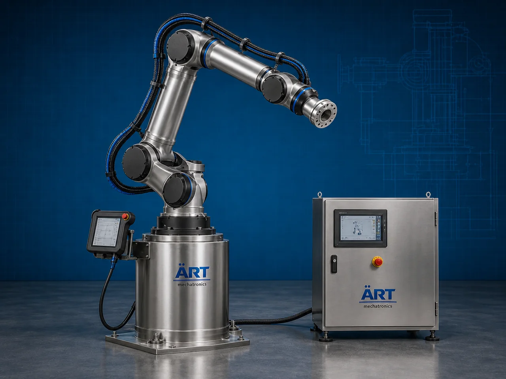

Robotic Arm Machine (Industrial Robotic Automation & Smart Material Handling System)
A Robotic Arm Machine, also known as an Industrial Robotic Arm or Robot Arm Automation System, is an advanced industrial automation equipment designed for automatic pick and place operations, material handling, welding, packaging, palletizing, assembly, inspection, machine tending, and intelligent production line automation using programmable robotic arm technology.

About the Robotic Arm
Robotic arm systems are widely used for:
- Pick and place automation
- Packaging and palletizing
- Material handling automation
- Welding and fabrication
- Assembly line automation
- Smart factory operations
The machine improves:
- Production efficiency
- Automation accuracy
- Labor reduction
- Product handling speed
- Workplace safety
- Industrial productivity
The robotic arm system combines:
- Multi-axis robotic arms
- Servo-controlled movement systems
- PLC and HMI automation
- Sensors and vision systems
- Intelligent programmable controls
to perform highly accurate and repetitive industrial tasks automatically.
Robotic arm machines are widely used in industries such as:
Manufacturing industries
Automobile industries
Food processing industries
Packaging industries
Pharmaceutical industries
Electronics industries
Warehousing & logistics
Smart factory automation plants
where high-speed precision automation and intelligent production systems are essential.
The machine is highly suitable for:
- Pick and place systems
- Packaging automation
- Welding automation
- Palletizing systems
- Product inspection
- Industrial assembly operations
ART Mechatronics offers high-performance robotic arm machines, engineered for Industry 4.0 automation, intelligent production systems, precision operation, and reliable long-term industrial performance.
Working Principle of Robotic Arm Machine
Sensors or automation systems detect product position and operational requirements
PLC or robotic controller sends programmed motion commands to robotic arm
Servo motors control precise robotic arm movement across multiple axes
Robotic arm performs:
- Pick and place
- Packaging
- Palletizing
- Welding
- Assembly
- Product inspection
- Machine loading/unloading with high accuracy and speed.
Vision systems and sensors help robot identify: Product orientation Position Shape Barcode or inspection parameters
Robotic arm synchronizes with: Conveyors Packaging machines CNC machines Assembly systems Smart factory automation lines
Completed products automatically moved to next production or packaging stage
Types of Robotic Arm Machines
- 1. Pick & Place Robotic Arm
Designed for: ✔ High-speed product picking and placement operations
- 2. Welding Robotic Arm
Suitable for: ✔ Automated welding and fabrication applications
- 3. Palletizing Robot Arm
Used for: ✔ Automatic pallet stacking and packaging operations
- 4. SCARA Robotic Arm
Designed for: ✔ High-speed precision assembly applications
- 5. Collaborative Robot Arm (Cobot)
Suitable for: ✔ Human-robot collaborative work environments
- 6. Six Axis Industrial Robot Arm
Designed for: ✔ Advanced industrial automation and flexible robotic movement systems
Industries Using Robotic Arm Machines
🏭 Manufacturing Industry Smart production and automation systems 🚗 Automobile Industry Welding, assembly, and component handling systems 📦 Packaging Industry Packaging and palletizing automation systems 🍃 Food Processing Industry Food handling and packaging automation systems 💊 Pharmaceutical Industry Medicine packaging and product handling systems 💻 Electronics Industry Precision component assembly operations 🚚 Warehousing & Logistics Automated material handling and sorting systems 🏢 Smart Factory Industry Industry 4.0 robotic automation systems
Features & Advantages
- High-speed precision industrial automation
- Fully programmable robotic operation
- Reduces manual labor and operational errors
- Improves production efficiency and consistency
- Multi-axis flexible robotic movement
- Continuous industrial operation
- Smart sensor and vision system integration
- Easy integration with automated production lines
- Energy-efficient industrial automation solution
Technical Highlights
Robot Type: Pick and place robot Welding robot SCARA robot Six-axis robot Collaborative robot (Cobot) Motion System: Servo motor controlled axes Control System: PLC automation Robotic controller systems HMI touchscreen interface Sensor Technology: Vision systems Position sensors Barcode scanners Automation: Fully automatic robotic operation
Turnkey Robotic Arm Automation Solutions
ART Mechatronics offers: Complete robotic arm automation systems Smart factory integration solutions Pick and place automation systems Packaging and palletizing robotic systems Installation & commissioning After-sales service & AMC
Why Choose Art Mechatronics
Expertise in industrial robotics and smart automation systems Customized robotic arm solutions for multiple industries High-performance intelligent automation systems Advanced PLC, servo, and robotic integration capability Proven Industry 4.0 automation performance across sectors
Applications
Manufacturing Plants Automobile Industries Packaging Facilities Food Processing Plants Pharmaceutical Manufacturing Units Smart Factory Facilities
Related Automation & Robotics machines
Get pricing & specs for the Robotic Arm
Share the product, target capacity, current process and plant location. These details help our engineers discuss the right machine or line configuration.
One partner, from design to start-up
ART Mechatronics designs, manufactures, installs and commissions your Robotic Arm solution with regional presence in India, UAE and Thailand.